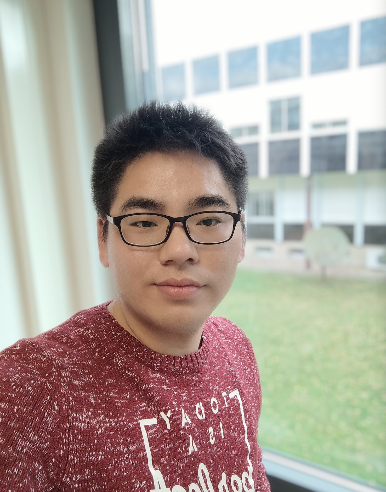

I am a doctoral researcher, supervised by Prof. Dr. Tegawendé F. Bissyandé (ERC Fellow), head in the group Trux, and advised by Prof. Dr. Jacques Klein in the Trux group, Interdisciplinary Security and Trust Centre (SnT), University of Luxembourg (UL).
Research interests:
AAAI’24 (submission) Multilevel Semantic Embedding of Software Patches: A Fine-to-Coarse Grained Approach Towards Security Patch Detection [pdf]
Xunzhu Tang *, Zhenghan Chen, Saad Ezzini, Haoye tian, Yewei Song, Jacques KLEIN, Tegawende F. Bissyande.
Submission in AAAI/i>, 2024.
AAAI‘24 (submission) Hyperbolic Code Retrieval: A Novel Approach for Efficient Code Search Using Hyperbolic Space Embeddings [pdf]
Xunzhu Tang *, Zhenghan Chen, Saad Ezzini, Haoye tian, Yewei Song, Jacques KLEIN, Tegawende F. Bissyande.
Submission in AAAI/i>, 2024.
ACM MM'23 Faster Attention with Heterogeneous RGCN for Medical ICD Coding Generation [pdf] [bib]
Zhenghan Chen, Changzeng Fu, Ruoxue Wu, Ye Wang, Xunzhu Tang *, Xiaoxuan Liang.
Accepted for publication in ACM MM, 2023.
ASE‘23 Delving into Commit-Issue Correlation to Enhance Commit Message Generation Models [pdf] [bib]
Liran Wang, Xunzhu Tang, Yichen He, Changyu Ren, Shuhua Shi, Chaoran Yan, Zhoujun Li.
Accepted for publication in ASE, 2023.
EMSE’23 (major revision) App Review Driven Collaborative Bug Finding [pdf] [bib] Xunzhu Tang, Haoye Tian *, Pingfan Kong, Kui Liu, Xin Xia, Jacques Klein, Tegawendé F Bissyandé. Under review in EMSE, 2023.
AAAI'23-W3PHIAI Automatically Extracting Information in Medical Dialogue: Expert System And Attention for Labelling [pdf] [bib]
Xinshi Wang, Xunzhu Tang.
Accepted for publication in W3PHIAI23 (AAAI2023 workshop), 2023.
AAAI'23 MetaTPTrans: A Meta Learning Approach for Multilingual Code Representation Learning [pdf] [bib]
Weiguo Pian, Hanyu Peng, Xunzhu Tang, Tiezhu Sun, Haoye Tian*, Andrew Habib, Jacques Klein, Tegawendé F Bissyandé.
Accepted for publication in Proceedings of the 37th AAAI Conference on Artificial Intelligence, 2023. [Acceptance rate: 19.6% (1,721/8,777)]
ASE'22 Is this Change the Answer to that Problem? Correlating Descriptions of Bug and Code Changes for Evaluating Patch Correctness [pdf] [bib]
Haoye Tian, Xunzhu Tang, Andrew Habib, Shangwen Wang, Kui Liu*, Xin Xia, Jacques Klein, Tegawendé F. Bissyandé.
Accepted in Proceedings of the 37th IEEE/ACM International Conference on Automated Software Engineering, 2022. [Acceptance rate: 22.0% (116/527)]
DASFAA'22 (CCF B) HieNet: Bidirectional Hierarchy Framework for Automated ICD Coding [pdf] [bib]
Shi Wang, Daniel Tang*, Luchen Zhang, Huilin Li, Ding Han.
Accepted for publication in Database Systems for Advanced Applications, 2022. [Acceptance rate: 18% (72/400)]